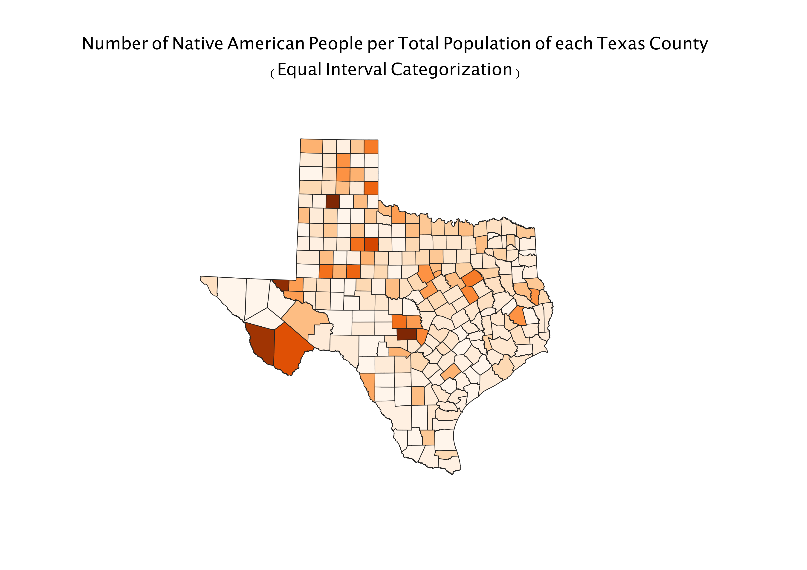
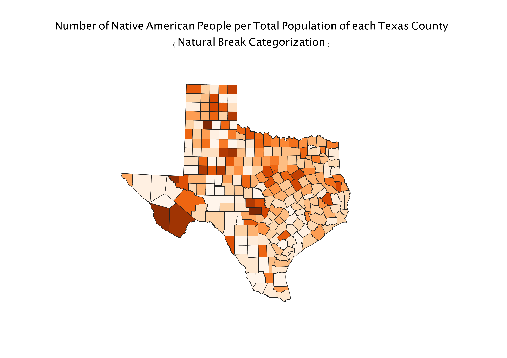
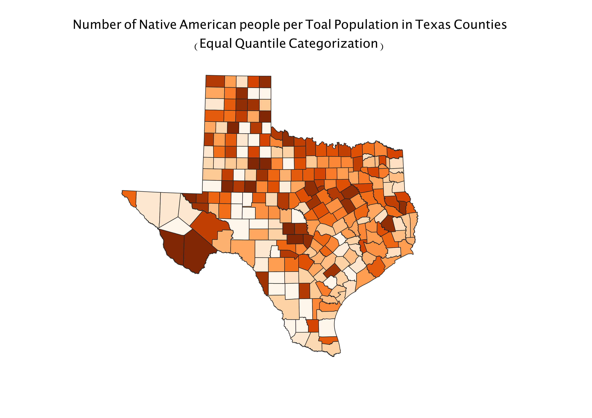

Homework 8: Number of Native American People Per Total Population in Texas Counties
Devin Wilson
My map depicts the Number of Native American People Per Total Population in Texas Counties. The darkest orange counties indicate the highest number of Native American people and the lightest counties have the least.
In each different of the three categorizations I used, the data shifted and the density of Native American people in each county is portrayed differently.

This classification is good for data which is evenly distributed. It breaks the data into equal quantiles so if an interval is overly represented the data will appear all similiar colors.

A benefit of this classification is that I identifies natural breaks within the data. A downside to this classification is it is not beneficial for a very similiar data set.

This is useful because each interval will be equally represented on the map. This classification can also group outliers into intervals which don't accurately represent them.